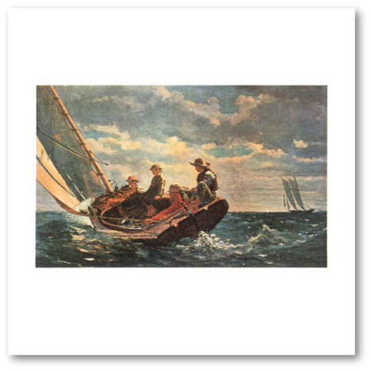
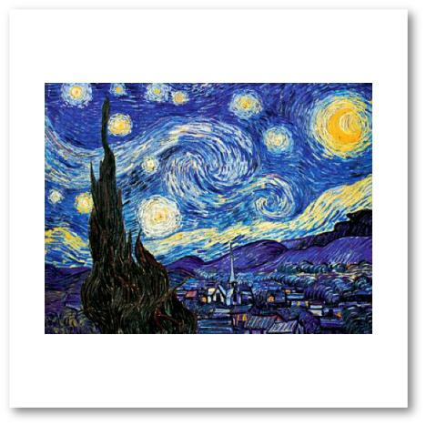
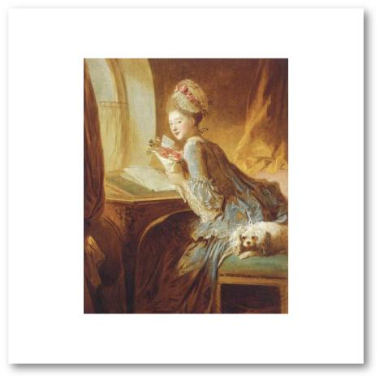
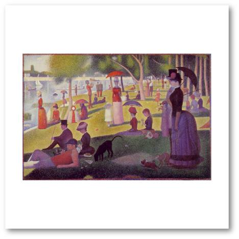
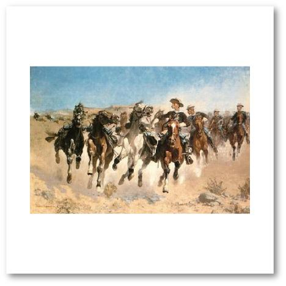

Music: “Air” from the “Water Music Suite” by Frederich Haendel, listen to it here
Art: “Breezing Up” by Winslow Homer

Music: “Mars” from “The Planets” by Gustav Holst, listen to it here
Art: “Starry Night” by Vincent van Gogh

Music: “The Wedding March” (also called “Bridal Chorus”) from the opera “Lohengrin”by Richard Wagner, listen to an example here
Art: “Bride and Groom” by Amedeo Modigliani
Music: “Musetta's Waltz”” from the opera “La Boheme” by Giacomo Puccini, listen to it here
Art: “Le Billet Doux” (Love Letter) by Jean Honore Fragonard

Music: “Humoresque, No. 7” by Antonin Dvorak, listen to it here or here
Art: “La Grande Jatte” by Georges Seurat

Music: “Ouverture” from the opera “William Tell” by Gioacchino Rossini, listen to it here, (or here for a great fun song of Anita Renfroe using this ouverture)
Art: “Dismounted” by Frederic Remington

If you want to download the music, you could purchase the following mp3 files:
The links to the music may or may not work. We do not take any responsibility for the content of the linked web pages. Please be aware that comments on YouTube™ are outside our control.